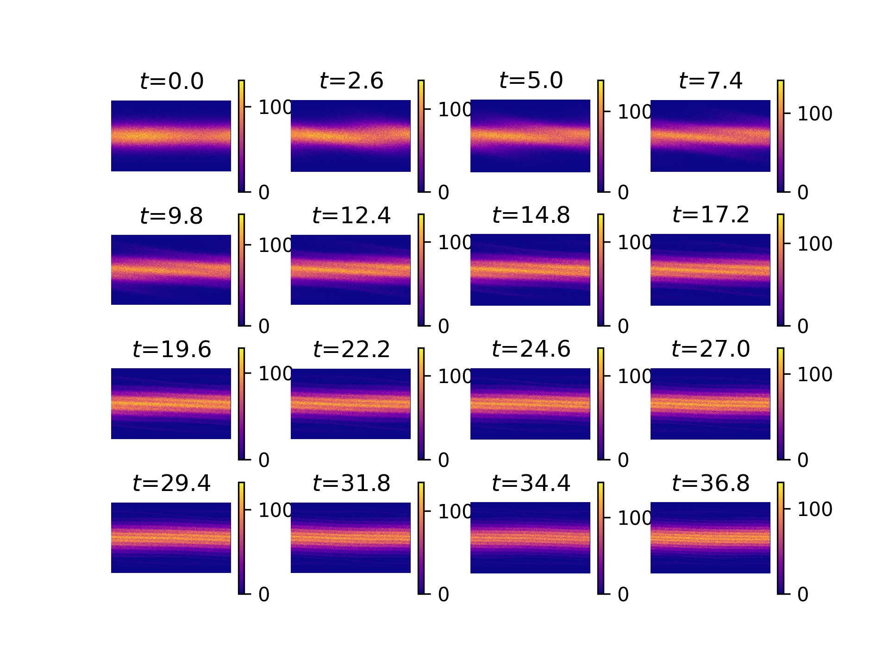

Phase space of 1D Landau Damping
Here is my slides for AM-SURE final presentation.
Plasma is a kind of fluid which usually consists of a large number of charged particles such as ions and electrons. A simulation of all the particles is nearly impossible as there are simply too many particles, and calculating their interactions requires a $O(N^2)$ complexity where $N$ is the number of particles. The PIC Method gives an alternative solution by introducing finite-size particles at the scale of Debye length $\lambda_D$. Debye length is the distance within which particle-particle interactions dominate and outside which the electric field dominates. It can be calculated as: \begin{equation}\lambda_D = \frac{v_{thermal}}{\omega_p}\end{equation} The finite-size particles can be viewed as clusters of ions or electrons. We can then simulate the motion of these finite-size particles by simply calculating the electric field ($O(N)$ complexity) instead of particle-particle interactions. The evolution of the distribution function of these particles are governed by the Vlasov's Equation: \begin{equation}\frac{\partial f}{\partial t}+\boldsymbol{v}\nabla_{\boldsymbol{x}} f+\frac{q_s\boldsymbol{E}}{m_s}\nabla_{\boldsymbol{v}} f = 0\end{equation} where $f=f(\boldsymbol{x},\boldsymbol{v},t)$ is the distribution function which satisfies \begin{equation}\int_\Omega\int_{\mathbb{R}^n} f(\boldsymbol{x},\boldsymbol{v},t)d\boldsymbol{v}d\boldsymbol{x} = Q\end{equation} where $Q$ is the total charge in the system. Each macro particle has a density function over the physical space, known as the b-spline function. The simplest b-spline is the step function \begin{equation}S_0(\boldsymbol{x}) = \begin{cases} &1\text{ if } |\boldsymbol{x}|<1/2 \\ &0 \text{ otherwise}\end{cases} \end{equation} In this project, one main goal is to implement some higher order b-splines and determine if their increased computational complexity is offset by the increased accuracy they are expected to provide. This will require a detailed study of the deterministic, grid-based error, as well as the probabilistic error associated with representing continuous functions as a collection of discrete particles.